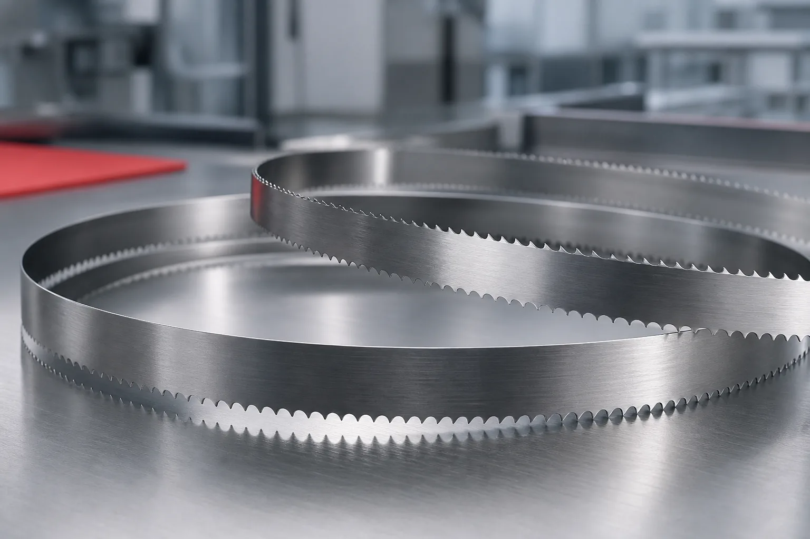
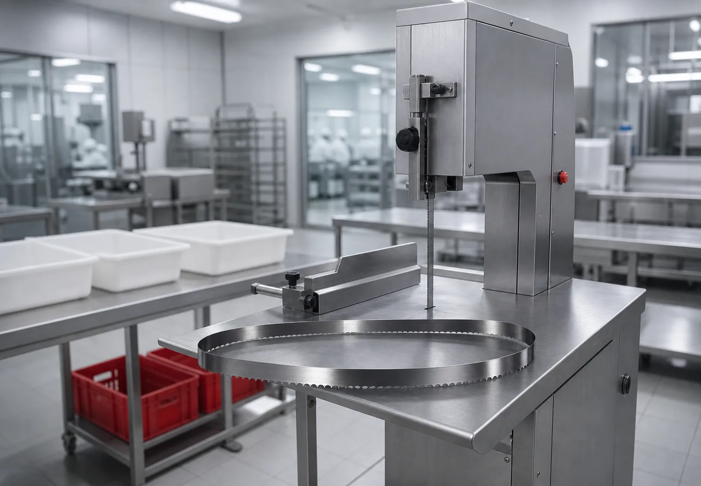
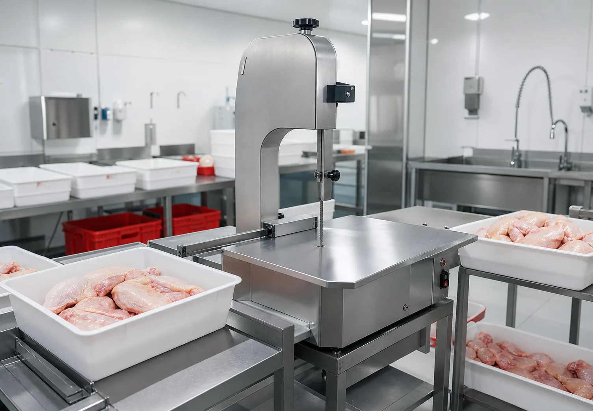

Длина полотна
Подбирается под конкретную модель станка или фактический размер.
Ленточные полотна к станкам для разделки
Подбираем ленточные пилы под оборудование мясных цехов, производств, ферм и участков разделки.
В заявке достаточно указать модель станка, размеры полотна или фото старого полотна. Дополнительно учитываем продукт, нагрузку и проблему, которую нужно решить.

Подбирается под конкретную модель станка или фактический размер.
Влияют на стабильность реза и ресурс полотна.
Подбирается под мясо, кость, птицу и замороженный продукт.
Учитываем сменность, нагрузку, чистоту реза и частоту замен.
Основной продукт
Страница пил теперь работает как прикладной раздел: клиент видит, какие данные нужны для подбора, и сразу может отправить заявку.

Полотна для ежедневной работы на участке разделки охлажденного и подготовленного мясного сырья.
Подбор полотен под более жесткий режим: кость, замороженные блоки, сырье с высокой нагрузкой на зуб.

Решения для участков разделки птицы, где важны скорость, повторяемость реза и минимизация простоев.
Параметры заявки
Если точные размеры неизвестны, можно начать с фото оборудования, старого полотна или шильдика станка. Затем параметры уточняются в переписке или по телефону.
Отправить параметрыПроизводственные задачи
Блок помогает быстро отнести заявку к нужному сценарию и не заставляет клиента искать общий каталог.
Ежедневная разделка, повторяемые операции и регулярная замена расходников.
Подбор под конкретный станок и фактические объемы разделки.
Режимы, где особенно важны зуб, ресурс и стабильность полотна.
Разделка курицы и птицы с учетом скорости и качества реза.
Порядок работы
Модель станка, фото, размеры полотна или описание продукта.
Тип сырья, нагрузку, частоту замены и требования к резу.
Подбираем параметры полотна и согласуем количество.
Согласуем сроки, поставку и удобный канал связи.
Контакты
Отправьте модель станка, размеры полотна или фото старого полотна. В теме письма можно указать "Подбор пилы для мяса".